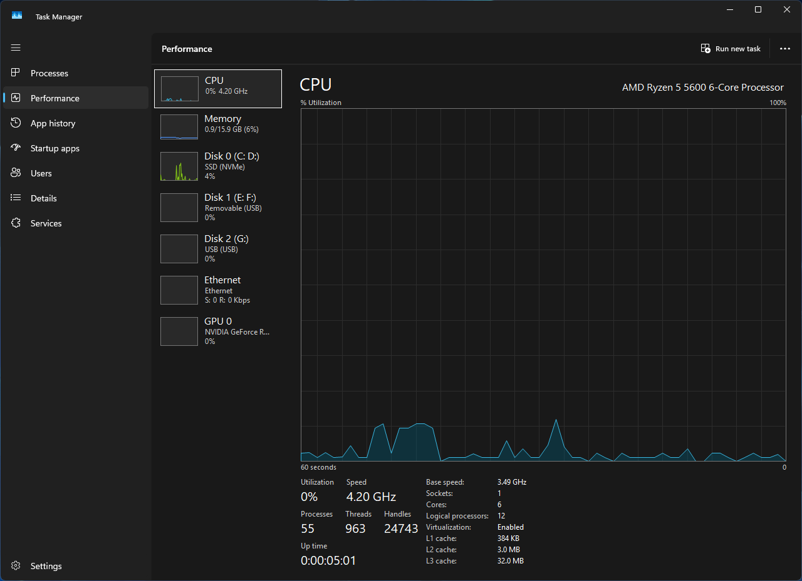
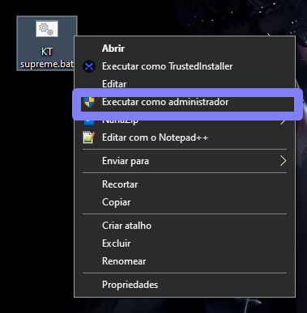

Performance extrema para Windows.

O KT Optimizer não é apenas um software, mas uma suíte de diretivas de engenharia que interagem com o Kernel do Windows para eliminar gargalos de software.
O objetivo é fornecer a máxima responsividade do sistema e estender a vida útil dos componentes de hardware do PC.
Ajustes diretos nos registradores de hardware e gerenciamento de energia para garantir que a CPU entregue máximo clock de forma constante em cenários de estresse, reduzindo P-State transitions.
Desabilitação do MPO (Multi-Plane Overlay) e ajustes na latência do render queue, forçando o Windows a dar prioridade absoluta de interrupção PCI-E para sua placa de vídeo.
Limpeza extrema removendo todos os aplicativos UWP inúteis, telemetria embutida e processos fantasmas da Microsoft que consomem recursos vitalícios no fundo.
Corte drástico nos serviços do Windows. Deixamos apenas os micro-serviços estritamente necessários para o funcionamento do Core OS, liberando centenas de MB de RAM.
Tweaks profundos na pilha TCP/IP, desabilitação de algoritmos de Nagle e ajustes de MTU para garantir o menor ping fisicamente possível nas suas rotas de jogos.
Alinhamento rigoroso de páginas de memória e expurgo agressivo de standby lists para evitar stuttering de frametime por memory leaking do Windows.
O arquivo foi verificado no VirusTotal e é completamente seguro.
Otimizadores de sistema que modificam o kernel e registros do Windows frequentemente acionam heurísticas de antivírus. As 3 detecções são falso positivo confirmado. O KT Optimizer não contém malware, vírus, spyware ou qualquer código malicioso.
Comparação real de desempenho entre o Windows padrão (sem otimizações) e o Windows otimizado com KT Supreme V2.


KT Supreme V2 - Build Técnica
Baixe agora o KT Optimizer e experimente a diferença do desempenho real mensurável. Gratuito, código aberto, sem cadastro.
Arquitetura de elite para quem não aceita compromissos com a latência.
Perfeição a poucos cliques de distância. Siga o procedimento rápido para desbloquear o potencial do seu PC.

Respostas às perguntas mais comuns sobre otimização